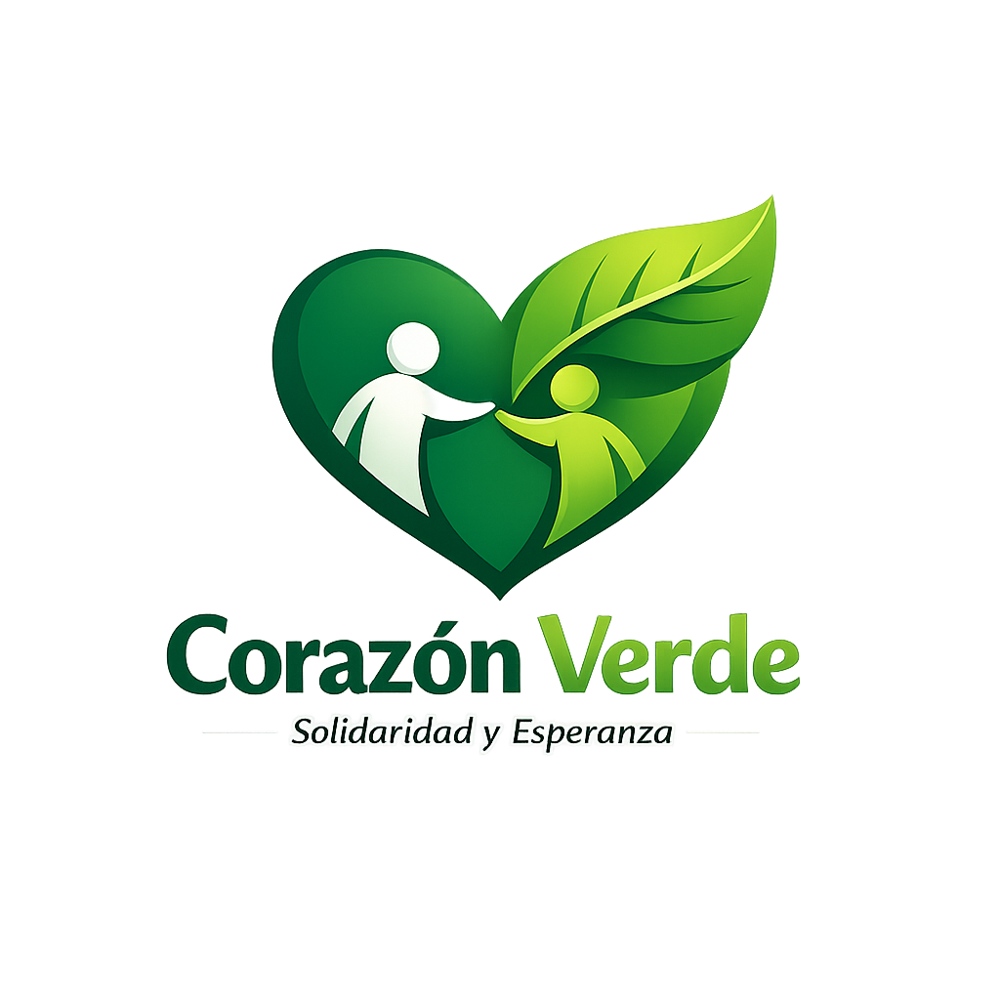

Corazón Verde es una ONG dedicada a fortalecer la comunidad a través de la solidaridad, la educación y la participación activa.
Nuestra misión es brindar apoyo a quienes más lo necesitan, capacitar a la población en herramientas útiles para la vida y generar conciencia social.
Desde talleres de primeros auxilios hasta merenderos comunitarios, cada acción suma. Queremos que cada persona que se acerque a Corazón Verde encuentre un lugar para ayudar, aprender y crecer junto a otros.
Únete a nuestra causa. Juntos podemos construir un corazón más solidario.